|
Aufgabe 1a: |
| Behälter
I hat die Form eines regelmäßigen sechsseitigen
Prismas mit einem Fassungsvermögen von 6,1 Litern
und einer Grundkante
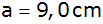 . |
Berechnen
Sie die Höhe
 ,
die Raumdiagonale ,
die Raumdiagonale
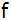
und den Winkel
 . .
Wie groß ist die
Innenfläche des Behälters in dm2? |
|
|
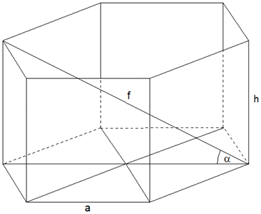 |
4 P |
|
|
Aufgabe 1b: |
Behälter II hat die Form
eines regelmäßigen sechsseitigen Pyramidenstumpfes.
Es gilt: |
|
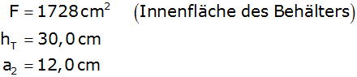 |
|
Berechnen Sie die Höhe
dieses Behälters. |
|
|
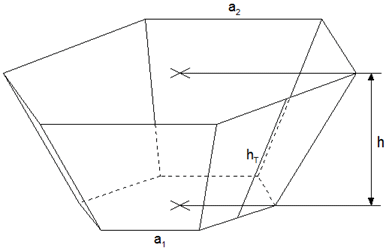 |
4 P |
|
|
Aufgabe 1c: |
| Für
Behälter III (siehe Skizze in Aufgabenteil b) gilt: |
|
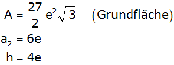 |
|
Zeigen Sie ohne Verwendung gerundeter Werte, daß für
die Seitenflächenhöhe gilt: |
|
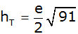 |
|
|
|
3 P |
|
|
|
|
Aufgabe 2b: |
Ein Werkstück ist
zusammengesetzt aus Halbkugel, Zylinder und
Kegelstumpf (siehe Achsenschnitt).
Für eine andere Ausführung
gilt: |
|
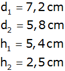 |
Bei dieser Ausführung wird
der Kegelstumpf parallel zur Grundfläche so
abgeschnitten, daß das neue Werkstück eine
Gesamthöhe von 10,0 cm bekommt.
Berechnen Sie das Volumen
des neuen Werkstücks. |
|
|
|
4 P |
|
|
Aufgabe 2c: |
Ein Werkstück ist zusammengesetzt
aus Halbkugel, Zylinder und Kegelstumpf (siehe
Achsenschnitt).
Bei einem weiteren Werkstück ist der
Achsenschnitt des zylindrischen Teils ein Quadrat mit der
Seitenlänge
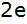 .
Der obere Durchmesser des Kegelstumpfes hat die Länge
 . .
Das Gesamtvolumen des Werkstücks beträgt
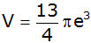 .
Berechnen Sie ohne Verwendung gerundeter Werte die Höhe
des Kegelstumpfes in Abhängigkeit von
.
|
|
|
3 P |
|
|
Aufgabe 3a: |
| Das
Grundstück ABCD hat folgende Maße: |
|
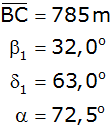 |
|
Berechnen Sie den Umfang des Grundstückes. |
|
|
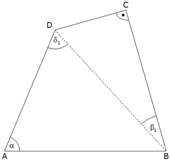 |
4 P |
|
|
Aufgabe 3b: |
| Von
einem anderen Grundstück ABCDE kennt man: |
|
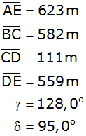 |
|
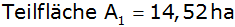 |
Berechnen Sie den Winkel
AEB =

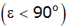 . |
|
|
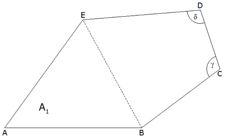 |
4 P |
|
|
Aufgabe 3c: |
|
Nebenstehendes Viereck ABCD hat den Flächeninhalt |
|
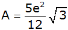 |
|
Berechnen Sie ohne
Verwendung gerundeter Werte den Winkel
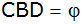 . |
|
|
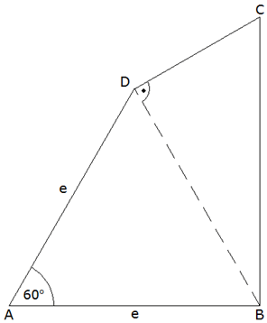 |
3 P |
|
|
Aufgabe 4a: |
Die Skizze zeigt einen
Giebel mit symmetrischem Fachwerk.
Bekannt sind: |
|
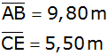 |
Berechnen Sie den Winkel
 sowie die Längen
sowie die Längen
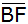 ,
 , ,
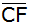
und
 . . |
|
|
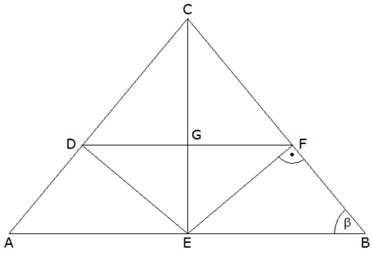 |
4 P |
|
|
Aufgabe 4b: |
| In
der nebenstehenden Figur ist bekannt: |
|
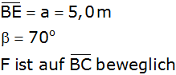 |
Geben Sie die Länge
 in Abhängigkeit von
in Abhängigkeit von
 an.
an. |
|
Tabellieren Sie
in Schritten von
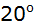
im Intervall
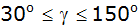
und stellen Sie diese Abhängigkeit in einem
rechtwinkligen Koordinatensystem dar (Rechtsachse
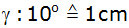 ;
Hochachse
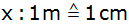 ).
Für welchen Wert
wird
am kleinsten? Begründen Sie dies.
|
|
|
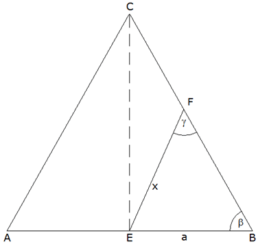 |
4 P |
|
|
Aufgabe 4c: |
| In
nebenstehender Figur gilt: |
|
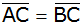 |
|
Zeigen Sie, daß sich der Umfang des Vierecks ADBC
ohne Verwendung gerundeter Werte nach der Formel |
|
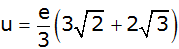 |
|
berechnen läßt. |
|
|
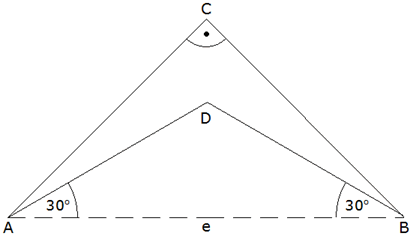 |
3 P |
|
|
Aufgabe 5a: |
| Max schließt zu
Jahresanfang bei seiner Bank einen
Prämiensparvertrag über 3.500,00 DM mit einer
Laufzeit von drei Jahren ab. |
| |
Zinssatz im 1.
Jahr: 6,0 %
Zinssatz im 2. Jahr:
6,5 %
Zinssatz im 3. Jahr: 7,5 %
Zinsen werden mitverzinst. |
|
Auf
welchen Betrag wächst sein Guthaben nach 3
Jahren an?
Zusätzlich erhält Max von der
Bank nach den 3 Jahren eine Prämie in Höhe
von 11,0 % der
gutgeschriebenen Zinsen. |
| Wie
hoch ist sein Guthaben einschließlich der
Prämie? |
| Um
wieviel Prozent ist sein Anfangsguthaben
insgesamt angewachsen? |
|
| Max
rechnet dann aus, daß die 3.500,00 DM auf
einem Sparbuch nach Ablauf von 3 Jahren um
459,79 DM anwachsen würden. |
| Von
welchem jährlich gleichbleibenden Zinssatz
geht er dabei aus? |
|
|
|
4 P |
|
|
Aufgabe 5b: |
| Gabriele legt zu
Jahresanfang 700,00 DM zu einem Zinssatz von 4,5%
auf einem Sparbuch an. |
| Auf welchen Betrag wachsen
die 700,00 DM nach 1 Jahr und 9 Monaten an, wenn die
Zinsen mitverzinst werden? |
| Ihre
Mutter legt ebenfalls zu Jahresanfang einen
bestimmten Betrag zu 4,0% auf einem Sparbuch
an. Ihr Guthaben ist am Ende dieser Zeit auf
1.071,20 DM angewachsen. |
| Wie
hoch war ihr Anfangsguthaben? |
|
|
|
4 P |
|
|
Aufgabe 5c: |
| Marianne legt 7.500,00 DM
auf 3 Jahre bei der Bank an. |
| Der Zinssatz im 1. Jahr
beträgt 6,5%. Im 2. Jahr ist der Zinssatz um 1
Prozentpunkt niedriger als im 3. Jahr. Nach drei
Jahren ist ihr Guthaben auf 9.230,36 DM angewachsen. |
| Wie hoch ist der Zinssatz im
3. Jahr? |
|
|
3 P |
|
|
Aufgabe 6a: |
| Die Turnhalle einer Realschule soll
umgebaut werden. Eine Firma berechnet die voraussichlichen
Umbaukosten wie folgt: |
| |
Materialkosten
Geschäftskosten
Gewinn
Mehrwertsteuer |
120.000 DM
60% der
Materialkosten
25.000 DM
15% |
|
|
Was kostet der Umbau
voraussichtlich?
Durch eine Lohnerhöhung steigen die
Geschäftskosten um 6.000 DM.
Wie hoch ist nun der
prozentuale Anteil der Geschäftskosten an den
Materialkosten?
Um wieviel Prozent steigen die
Umbaukosten durch die Lohnerhöhung? |
|
4 P |
|
|
Aufgabe 6b: |
Nach dem Umbau liefert ein
Händler Sportgeräte.
Er kalkuliert folgendermaßen: |
| |
Bezugspreise der Geräte
Gewinn
Mehrwertsteuer (15%) |
62.000,00 DM
21%
13.278,54 DM |
|
Wie hoch sind die
Geschäftskosten in Prozent und in DM?
Wie hoch wäre sein Gewinn in
Prozent und DM gewesen, wenn er bereits 1992 (MWSt 14%) zum
selben Endpreis hätte liefern können? |
|
4 P |
|
|
Aufgabe 6c: |
| Die Gemeinde
will ein Darlehen in Höhe von 300.000 DM aufnehmen. |
| Zu welchem
Zinssatz muß das Darlehen gewährt werden, wenn bei
einer jährlichen Rate von 75.000 DM für Zins und
Tilgung die Restschuld nach 2 Jahren noch 200.000 DM
betragen soll? |
|
|
3 P |
|